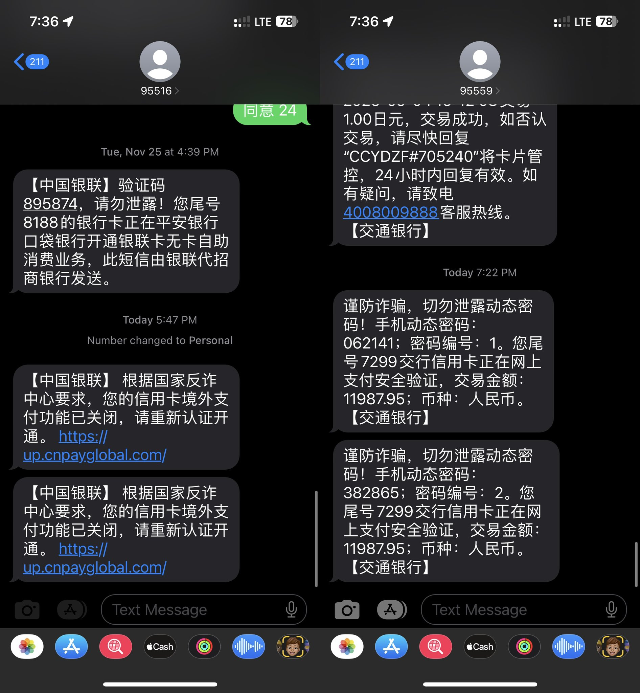

たたなこ
@tatanakots
@m1ssuo 日本那边有很多针对华人的假基站，短信协议初期的漏洞导致基站可以伪造任意短信，虽然新的协议已经对基站身份进行了验证，但是为了兼容性手机支持协议降级，所以能连上宣称自己是旧版的假基站

Vincent Yang
@m1ssuo
昨天差点被骗钱，在银座消费完就收到了银联的短信说我的卡境外支付被关闭了，让我点开链接重新认证。当时就觉得有点奇怪，这个链接看起来也不太正经，出于好奇还是点进去看了一下，输入卡号之后，要输入 CVV https://t.co/Tal7Z1pxyL